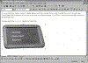
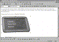

| ||||
In the first lesson, you learned how easy it is to place images on Web pages. Now you will create an image map -- an image with one or more hyperlinks.
When an image is formatted as an image map, a user can click on certain regions of the image and trigger image "hotspots." These hotspots launch the hyperlinks that have been added to the HTML by the FrontPage Editor.
Before you can create an image map, you must first insert the image that you will use.
The Image dialog box is displayed.
Figure 1. The File button
The image file you want to insert is named blackbrd.gif.
C:\Program
Files\Microsoft FrontPage\tutorial\
If you changed the default installation drive or folder during FrontPage Setup, you'll need to adjust the path accordingly.
The blackboard image is displayed on the page.
The blackboard image you placed on the current page has a black background, which does not fit the theme's light background image. You will now make the image border color transparent, so it will blend in with the white background color of the Tutorial Practice page.
An image is selected when it is outlined with rectangular file handles. When you select an image, the image toolbar is activated.
Figure 2. The Make Transparent button
The pointer changes to a pencil eraser.
The background of the blackboard image is now transparent, allowing the white background of the page to show through.

Click image to enlargeFigure 3. Image with a transparent background
Now you will create the hotspots on the image to complete the image map.
Figure 4. The Rectangle button
The Rectangle button creates a rectangular "hotspot" on an image. A hotspot is an area on an image that contains a hyperlink.
The pointer becomes a pencil.
When you let go of the mouse button, the Create Hyperlink dialog box is displayed. If you let go of the mouse button too soon, you can always adjust the hotspot region after completing the remaining steps.
The text "Interests" on the blackboard image is now a hyperlink.

Click image to enlargeFigure 5. Adding a linked hotspot to an image
Now experiment on your own and create additional image map hyperlinks from the remaining two lines of text on the blackboard image.
Create a hyperlink from the words "Photo Album" to the page called photo.htm, and a hyperlink from the word "Favorites" to the page called favorite.htm.
Later in this lesson, you will view the Tutorial Practice page in a Web browser, where you will be able to test the image map.
Before continuing, it is a good idea to save your work. You have imported the blackbrd.gif image from your local file system onto a page. FrontPage will save this image to the FrontPage Web so it will be available later when the Personal Web is published in Lesson 3.
Figure 6. The Save button
The blackboard image you have placed on your current page is added to your FrontPage Web and the current page is saved.
Did you find this material useful? Gripes? Compliments? Suggestions for other articles? Write us!
© 1999 Microsoft Corporation. All rights reserved. Terms of use.